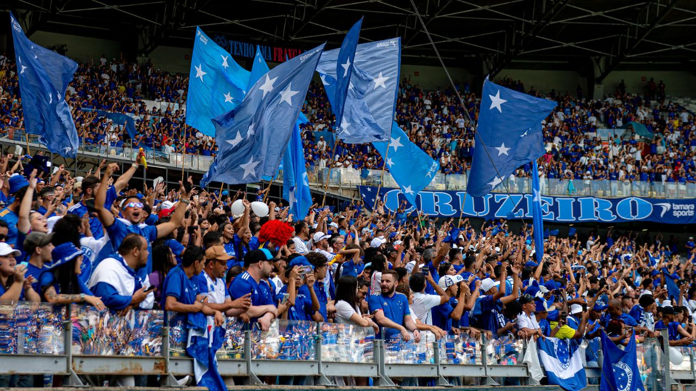
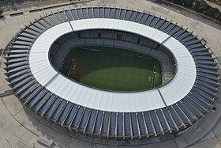

O Cruzeiro Esporte Clube foi fundado em 7 de janeiro de 1921, em Belo Horizonte, Minas
Gerais, por um grupo de jovens esportistas. Originalmente, o clube era conhecido como
Palestra Itália, mas, durante a Segunda Guerra Mundial, mudou seu nome para Cruzeiro, em
homenagem à constelação que figura na bandeira do Brasil.
O Cruzeiro se destacou rapidamente no cenário do futebol mineiro e brasileiro, conquistando
seu primeiro Campeonato Mineiro em 1926. Nos anos 1960 e 1970, o clube viveu sua era de
ouro, com conquistas importantes, incluindo a Copa do Brasil e a Copa Libertadores em 1976
e 1997. A equipe é famosa por sua rica história de títulos e por revelar grandes jogadores,
como Tostão, que é um ícone do futebol brasileiro.
Nos anos recentes, o Cruzeiro continuou a ser uma força no futebol brasileiro, com
conquistas significativas, incluindo a Copa do Brasil em 2017, consolidando sua posição
como um dos clubes mais tradicionais do país.
Curiosidades:
Torcida Apaixonada: A torcida do Cruzeiro, conhecida como "Raposa", é famosa por seu
apoio fervoroso e leal. Os torcedores se destacam pela paixão e pela presença em jogos,
tornando o ambiente sempre animado.

Estádio Mineirão: O Cruzeiro manda seus jogos no Estádio Mineirão, que é um dos maiores e
mais tradicionais do Brasil. O estádio passou por uma reforma para a Copa do Mundo de
2014 e continua sendo um palco importante para eventos esportivos.

Rivalidade Clássica: O Cruzeiro tem uma rivalidade histórica com o Atlético Mineiro,
conhecida como "Clássico Mineiro". Esses confrontos são intensos e emocionantes, atraindo
a atenção de torcedores de todo o Brasil.